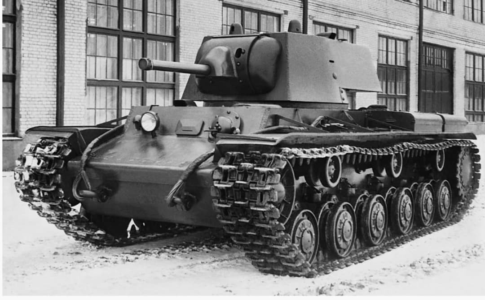
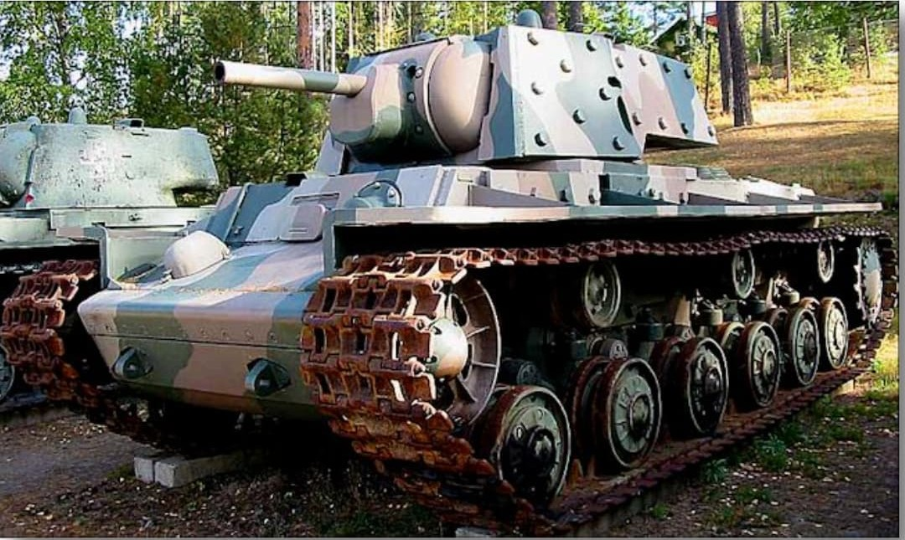

Le KV‑1 est l’un des chars les plus redoutés du début de la Seconde Guerre mondiale. Son blindage massif et sa résistance exceptionnelle en font un véritable cauchemar pour les Panzer allemands en 1941. Le KV‑1E, version à blindage appliqué, renforce encore cette protection pour contrer les nouveaux canons antichars allemands.

Le KV‑1 est conçu pour encaisser les tirs ennemis. Avec un blindage frontal de 75 à 100 mm, il domine largement les Panzer III et IV de 1941. Sa tourelle cylindrique et ses chenilles larges lui permettent d’évoluer dans les terrains difficiles du front de l’Est.
Rôle : percée, défense de secteurs clés, résistance aux tirs antichars.

Le KV‑1E (Ékranirovanny) reçoit des plaques additionnelles boulonnées sur la tourelle et les flancs. Ce blindage appliqué porte la protection totale jusqu’à 110–130 mm, rendant le char presque invulnérable aux Pak 38 allemands.
Rôle : résistance maximale face aux nouvelles armes antichars.